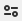

<!DOCTYPE html>
<html lang="en-UK">
<meta charset="UTF-8">
<head>

<title>Resuscitatron CPR webapp info</title>

<!-- Serah Allison 2021 -->

<meta name="viewport" content="width=device-width, initial-scale=1.0, maximum-scale=1.0" />
<link rel="icon" href="./favicon.ico" />  <!-- Icon by Wikimedia Commons user Overtheborderline -->
</head>


</html>
<style>
img.alertIcon {
  width: auto;
  height: 0.8em;
  padding-right: 0.3em;
}
div.licenceIcon {
  float: left;
  margin: 0 10px 0;
}
img.licenceIcon {
  height: 2em;
}
h3 {
  margin-top:2em;
}
p.licenceText {
  margin-bottom:2em;
}
</style>
<html>


<h1>Resuscitatron dev notes etc</h1>
<p>This webapp is intended only to assist clinicians in providing care they are trained and competent in.
THE SOFTWARE IS PROVIDED "AS IS", WITHOUT WARRANTY OF ANY KIND, EXPRESS OR IMPLIED, INCLUDING BUT NOT LIMITED TO THE WARRANTIES OF MERCHANTABILITY, FITNESS FOR A PARTICULAR PURPOSE AND NONINFRINGEMENT. IN NO EVENT SHALL THE AUTHOR BE LIABLE FOR ANY CLAIM, DAMAGES OR OTHER LIABILITY, WHETHER IN AN ACTION OF CONTRACT, TORT OR OTHERWISE, ARISING FROM, OUT OF OR IN CONNECTION WITH THE SOFTWARE OR THE USE OR OTHER DEALINGS IN THE SOFTWARE.</p>

<h3>Built-in settings</h3>
<ul>
<li>Compression rate: 110 bpm</li>
<li>Respiration rate (when an airway is established): 10/min</li>
<li>Rhythm check reminder: 2 minutes after the start of resuscitation or the previous rhythm check; red; audio alert (with a reminder 10 seconds prior to charge the monitor/defibrillator).</li>
<li>Adrenaline reminder: 4 minutes after the previous adrenaline dose; red; no audio.</li>
<li>Amiodarone reminder: 20 minutes after the first amiodarone dose; yellow; no audio (note amiodarone time-since-first-dose is stored internally by the app but is not displayed).</li>
</ul>

<h3>Making a homescreen shortcut</h3>
<ul>
<li><p>Android: go to the options menu (e.g. three vertical dots in the top right of the screen) then select <i>Add to Home screen</i> and follow the browser prompts.</p></li>
<li><p>iPhone: select the share menu (e.g. square with upward arrow) then select <i>Add to Home Screen</i>. Change title if desired, then select <i>Add</i></p></li></ul>

<h3>Problem-solving</h3>
<p>Intermittent or irregular sound? Timing and sound reproduction is variable across devices, operating systems, and browsers. The code requests the web browser check whether it is time to play a sound 100 times each second, but it is up to each operating system and browser to ensure that requst can be carried out. Some combinations work better than others. Also, Chrome has a <a href="https://github.com/CreateJS/SoundJS/issues/304">known issue</a> with <a href="https://github.com/CreateJS/SoundJS/issues/302">repetitive sounds</a> which this webapp tries to hack around by appended silence in the audio files to ensure audio overlap, which causes some background hiss on some devices. If you are experiencing issues, start by trying a different browser (e.g. Firefox). This webapp is known to work well on the following systems:<ul>
<li>Firefox 88 on a Samsung Galaxy S7A with Android 8</li>
<li>Safari 14 on an iPhone 8 with iOS 14</li>  <!-- TGO2 -->
</ul>
The app is useable but not optimal on the following systems:<ul>
<li>Chrome 90 on a Samsung Galaxy S7A with Android 8 (slightly irregular sounds)</li>
<li>Samsung Internet 14 on a Samsung Galaxy S7A with Android 8 (slightly irregular sounds)</li>
<li>Chrome 90 on a Samsung A11 with Android 10 (slightly irregular sounds)</li>  <!-- JC -->
<li>Chrome 80 on a Samsund A01 with Android 10 (slightly irregular sounds)</li>  <!-- ?veh -->
<li>Chrome 77 on a Samsung Galaxy Tab A6 with Android 7 (slightly irregular sounds)</li>  <!-- 461 -->
</ul>
Resuscitatron has been found to be unuseable on the following systems:<ul>
<li>Chrome 89 on a Samsung Galaxy J1 with Android 5 (very irregular sounds)</li> <!-- ?423 -->
<li>Chrome 86 on a Samsung Galaxy Tab A with Android 9 (no sound)</li>  <!-- 451 -->
</ul>
</p>

<p>'Audio not loaded' warning? This can be caused by missing sound files, by a slow or interrupted Internet connection, by the browser not being compatable with any of the sound files, or by security software or a DNS preventing access to audio files. If you're trying to use a device provided by your employer it's quite likely to be the latter. Maybe talk with the IT people about this.</p>

<p>No sound? Try clicking on an icon like this  or like this to the left of the web address (probably near the top of your screen), and choose "allow audio and video".</p>

<p>Screen turning off during resus? Try the instruction listed above for no sound. A looping 1-second 2x2 video is used to (hopefully) trick the browser into keeping the screen on during resuscitation. Note the screen is allowed to turn off when resusciation is ceased, although the case timer will continue.</p>

<!-- <p>Why does Resuscitatron run differently on iOS? iOS won't allow webpages to play sounds automatically, will only play a single sound at a time, and seems to prioritise other OS function over webpage execution leading to inconsistent performance. Sorry, at this stage the only solution I can see is to code a native iOS app, which is not something I want to do. If you'd like to, then go for it!</p> -->

<h3>Update log</h3>
<u>16/05/2021</u>
<ul>
<li>Button presses made more obvious, with a change in background colour, border, and audio click;</li>
<li>Lightened amiodarone button, and darkened adrenaline button;</li>
<li>10-second pre-alert to charge the defibrilator before rhythm check;</li>
<li>Keep-screen-on video hack doesn't take up extra space, opacity 0% so it's invisible;</li>
<li>Update to 'other actions' select box.</li>
</ul>

<h3>Licences</h3>
<div class="licenceIcon"></div><p class="licenceText">The author puts the code of this webapp into the public domain via a <a href="https://creativecommons.org/publicdomain/zero/1.0/legalcode">Creative Commons 0 licence</a> aka <a href="https://creativecommons.org/share-your-work/public-domain/cc0/">Public Domain "No Rights Reserved"</a>. In plain English (not withstanding the full legal text of the lience previously linked): Anyone is free to incorporate any part of the code of this webapp into their own work, and modify it as they please, for any purpose whether commercial or otherwise; the author makes no warranties of any kind. Credit would be nice, but isn't a requirement for use or adaptation. I hope this app and code can help make clinicians' lives easier while they save lives.</p>
<div class="licenceIcon"></div><p class="licenceText">To achieve cross-browser audio consistency, this webapp uses <a href="https://howlerjs.com/">HowlerJS by James Simpson and GoldFire Studios, Inc.</a> under <a href="https://mit-license.org/">MIT licence.</a></p>
<div class="licenceIcon"></div>
<p>This webapp uses the following audio alerts:<ul>
<li>Compression: <a href="https://freesound.org/people/Empty%20Bell/sounds/180821/">beep.wav by Empty Beep</a> under <a href="https://creativecommons.org/licenses/by/3.0/">Creative Commons Attribution licence.</a></li>
<li>Ventilation: <a href="https://freesound.org/people/Bonhomhongon/sounds/488355/">goldencookie0.wav by Bonhomhongon</a> under <a href="https://creativecommons.org/publicdomain/zero/1.0/">Creative Commons 0 licence.</a></li>
<li>Rhythm check: <a href="https://freesound.org/people/edwardszakal/sounds/514153/">Beep Buzz by edwardszakal</a> under <a href="https://creativecommons.org/licenses/by/3.0/">Creative Commons Attribution licence.</a></li>
<li>Button press: <a href="https://freesound.org/people/JarredGibb/sounds/219479/">Button 02.wav by JarredGibb</a> under <a href="https://creativecommons.org/publicdomain/zero/1.0/">Creative Commons 0 licence.</a></li></ul>
</p>
<div class="licenceIcon"></div>
<p>The heart icon used by this webapp is by <a href="https://commons.wikimedia.org/wiki/File:3D_heart.png">Wikimedia Commons user Overtheborderline</a>, and is licenced by them under either the <a href="https://www.gnu.org/licenses/fdl-1.3.html">GNU Free Documentation License</a> or the <a href="https://creativecommons.org/licenses/by-sa/3.0/deed.en">Creative Commons Attribution-Share Alike licence.</a> 
</p>


<br /><br />
<p>Serah Allison. 2021</div>
<br /><br />
<a href="index.html">Start new resuscitation</a>
</html>
